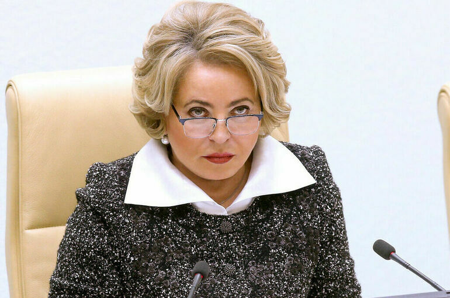

Рождена в Украине. Голосует за её ликвидацию.

Матвиенко — третье лицо в государстве: по Конституции РФ, она исполняет обязанности президента в случае недееспособности первых двух. Родившаяся в Украине, она голосовала за ратификацию аннексии украинских территорий и публично поддерживала каждый этап вторжения.
Родилась в Шепетівке — украинском городе. Окончила Ленинградский химико-фармацевтический институт. Комсомольская и партийная карьера в СССР.
Депутат Верховного Совета СССР. Посол России в Греции (1997–1998) и на Мальте. Вице-премьер по социальным вопросам (1998–2003). Участвует в формировании кадровой базы окружения Путина.
Назначена Путиным. Восемь лет управляет крупнейшим городом России. Городские проекты сопровождаются скандалами о коррупции. Выстраивает репутацию лоялиста.
Избирается спикером верхней палаты. Третье лицо государства. Совет Федерации при ней превращается в машину ратификации: все инициативы Кремля проходят без содержательных дебатов.
Голосует за ратификацию «договоров» о присоединении оккупированных территорий Украины. Публично поддерживает вторжение. Введены санкции ЕС, США, Великобритании, Канады и Австралии. Факт
Матвиенко обеспечивает «конституционное прикрытие» кремлёвской политики. Совет Федерации под её руководством не обсуждает — он ратифицирует. Аннексия четырёх украинских регионов, санкционирование военной операции, законы о военной цензуре — всё это прошло через Совет Федерации за часы без реального голосования «против». Её символическое значение усиливается биографической деталью: она сама родилась в Украине. Интерпр.
Персональные санкции ЕС с 2022 года — за ратификацию аннексии украинских территорий и поддержку вторжения. Факт США, Великобритания, Канада и Австралия ввели аналогичные меры.
Все утверждения в данном досье основаны на открытых публичных источниках. Факты, отмеченные Факт, имеют прямые первичные источники. Отмеченные Интерпр. — авторская интерпретация задокументированных событий.